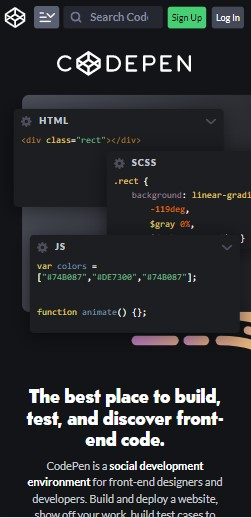
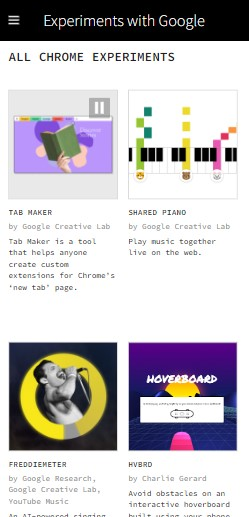
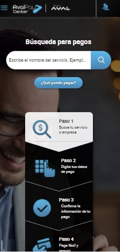

PARC: Contrast
Codepen
Codepen exemplifies contrast with the color palette that it uses. As you can see on the screenshot, its principal color is black, and all other functions are in gray tones. The white letter has excellent contrast with the black background. It is notable how it uses contrast to focus attention on the "sign up" button. It chooses a green color to draw attention.
PARC: Alignment
Experiments with Google
As you can see on the screenshot, "Experiments with Google" sorts the information that it wants to show in a "grad"; all pictures are aligned both horizontal and vertical to create a "table. The same happens with the paragraphs or descriptions; all content is aligned and has the same margin or padding (pictures and texts).
Rule of Thirds
Portal de Pagos Grupo Aval
This page gets sorted into three parts. On the top, there is a bar with general buttons. After that, there is a section where you can search for information regarding your payment. In the end, there is information regarding how to use the tool and make a payment. We can see alignment and repetition too.